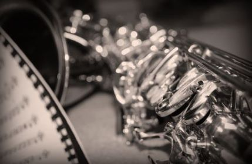

Adolphe Sax was a Belgian musician and instrument maker, and inventor of the Saxophone. He patented it in 1846, and his patent included 14 different versions of the saxophone, ranging from F contrabass to Eb Sopranino.
Today, most saxophones are one of 6 designs. While studying at the Brussels Conservatory of Music, he saw that there was a missing range in orchestral music between the softer woodwind instruments and louder brass instruments.
He wanted to make an instrument that would bridge the gap, and thus the saxophone was born. When his patent ended in 1866, the saxophone became a big hit in the US, with C.G. Conn being the first major US saxophone producer in the 1890s.
Selmer, another large instrument manufacturing company, made it big with their Mark VI saxophones, produced 1954-74, which had excellent tone and engineering. Between 150,000 and 200,000 Mark VIs' were produced, and go for around $10,000 today.
There have been many famous saxophone players throughout history, many of them Jazz players. Here are just a few.
Charlie Parker, 1920-1955, is often said to be the greatest saxophonist in history.He was known for bringing jazz from dance music played in clubs to the highest form of sontaneous artistic expression.
John Coltrane, 1926-67, was another legendary saxophonist, known for writing many songs along with Jazz greats Miles Davis on the drums and Thelonious Monk on piano.
Sonny Rollins, 1930-present, played tenor saxophone, and is sometimes credited as the greatest living improviser. A saxophone colossus from the golden age of Jazz still alive today.